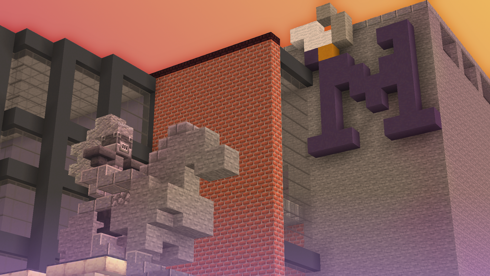

Minecraft Prom is a Bedrock Edition event hosted twice a year, on a
world designed to resemble the community's hometown, where friends get
together to indulge in fun activities. The event can be broken down
into two main parts: prom court and
the afterparty.
Prom court is the main event where participants have
the option to run for prom king, prom queen, or court jester. Within
each group, participants will challenge each other in a variety of
minigames to gauge who is most worthy of these royal titles. The
minigames players compete in consist of: Connect 4, spleef,
tic-tac-toe, and dodgeball for the finale. The winners are awarded
diamonds, exclusive royal cosmetics, and a Discord role. Once the
royal winners are crowned, the afterparty begins.
The afterparty is where players can openly explore
the map and participate in other activities. A crowd favorite activity
is fishing, where you can catch custom fish and sell them for
diamonds. Diamonds can be spent on loot boxes containing cosmetics
such as hats, back blings, and plushies.
Minecraft Prom was originally just a replica build of the high school
with minigames, serving as an alternative or addition to the school's
official prom and homecoming dances. Since the first event in April
2022, development has continued and now consists of several scripts
and dozens of models to amplify the experience. Even after graduation,
Minecraft Prom still serves as an event to bring players a slice of
their hometown, however far they may be now.
